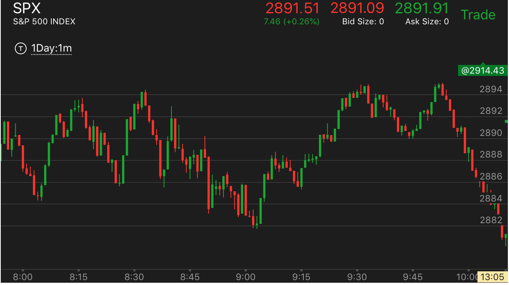
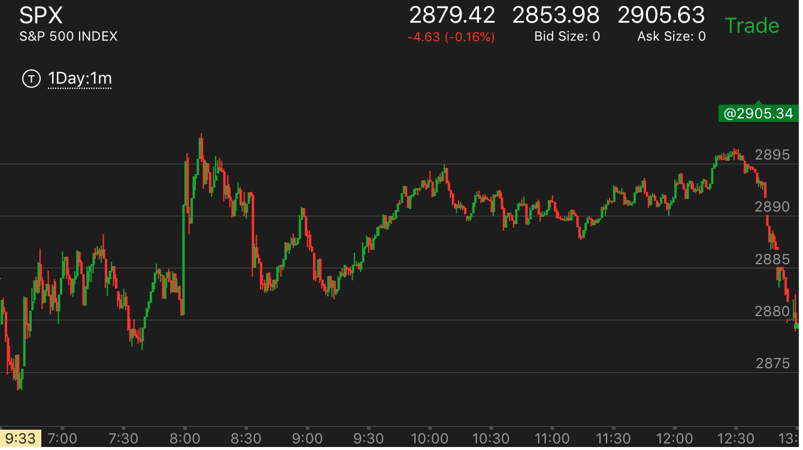
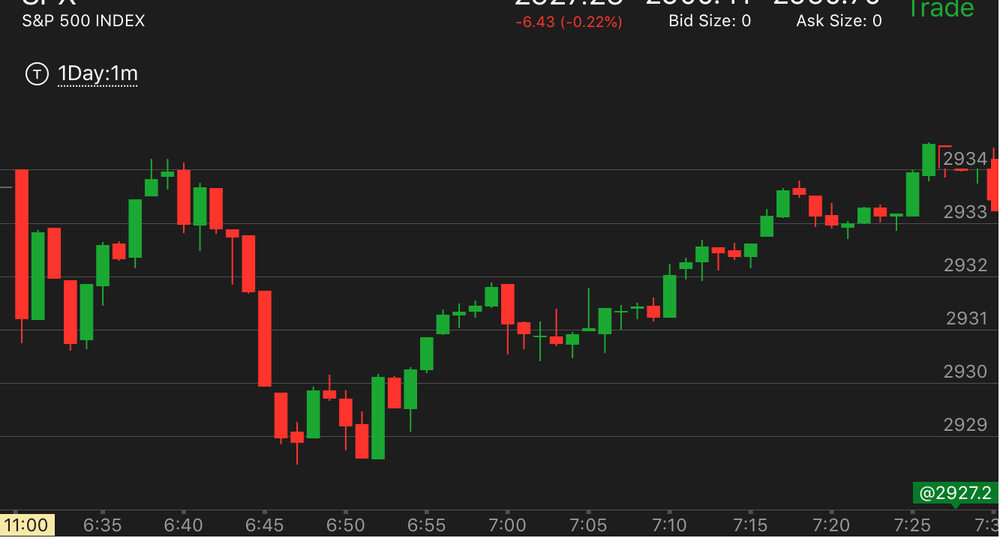

反常加速走势
- 这个走势的基本特点就是，快速运动后，稍微回调，再次缓慢运动后，创新高或者新低后，立刻拉回，拉回的速度很快
高于第二次缓慢运动的速度。这样的走势表示原来的走势没有结束，未来还会创新低或者新高，或者接近这个点。
但是暂时会大幅回调。这个回调的点位不一定，要具体分析。有时候也不回调，如果快速运动的幅度不大。
- 第一段走势速度很快，回调后，缓慢创出新高/或者新低。这个走势和正常的两段走势相反。一旦出现这个走势，它会出现大幅回调，但是不会反转。
所以它会回到和走势开始的时候接近的位置，然后继续运动。
- 如果第一段走势很大，可以反向操作。如果不大，那么可以等它回来后，继续顺势操作。
- 从基本分析入手，它在底部缓慢新低后，立刻反弹。说明没有到达底部。未来一定会低于这个点的。
- 从交易者的心理上，它大涨后，再次出现新高，让人觉得没完没了。不敢做空。结果它反而开始下跌。大跌后，交易者以为反转了。跟进做空。结果没有反转，它继续上涨。
下跌情况也可以类推。
开盘后出现疑似两段下跌，拉回全部跌势，大跌形成第二段跌势
反常两段走势上涨后，没有出现新高，而是接近新高后，长时间走平后大跌
下跌过程中，出现了加速下跌，但是又缓慢下跌，反弹到了附近的高点。
下跌过程中，出现了加速下跌，但是又缓慢下跌，反弹到了附近的高点。
TOP
关键在于它是跌势，而这个小的缓慢下跌，快速回调，说明它没有到达底部。

图示：
1. 开盘后，缓慢走低，快速上涨后，出现了5浪上涨走势.这个本身也说明了一定是跌势。
2. 11：00开始下跌，出现了两段下跌走势。11：30的第二段下跌非常缓慢，说明不是底部。它仍然反弹。反弹的时候出现了5浪，反弹的顶点恰好在两段下跌的开始点。
3. 这时可以肯定。它一定会大跌的。它一定会低于开盘的低点的。

图示:
1. 8：50出现了大幅快速下跌。似乎是个底部。结果9：00又出现了缓慢的更低点。说明这个是反常两段走势。这个走势是从8：35开始的两段
下跌走势。它反弹的最高位置可以到这个位置，也就是2895这个点。
2. 9：30开始下跌的时候，大盘也走出了一个反常两段走势。9：32开始下跌，速度很快，拉回后，缓慢下跌。然后全部拉回跌幅。
再开始下跌。根据前面的走势，它一定会低于2882这个点，至少也会接近这个点。所以不要轻易平仓。

图示：11：00出现了缓慢的下跌，新低后，快速反弹。这个和10：20开始的下跌成为对比。出现了反常的两段走势。
它大幅反弹，到了跌势开始的地方后，缓慢下跌。要记住，它一定会跌倒11：05附近的低点的。
反常两段走势上涨后，没有出现新高，而是接近新高后，长时间走平后大跌
TOP

图示:这个图有多个地方出现了反常两段走势。
1. 开盘后，第一个两段走势反转后，它的第一浪速度很快，然后继续缓慢上涨。这个反常两段走势，在7：30填补真空后，大涨。
2. 8：00大涨后，它立刻回调，然后缓慢上涨，新高。这个也是反常两段走势。但是，它在大幅回调填补真空后，收盘前才勉强到达原来高点附近。它在高点附近，没有突破高点，而是走平很久。
这个也是一种反常两段走势的结束方式，就是再次接近原来的极点，走平后，真的两段走势就结束了。这个走势的结束也在于，它最后冲高的时候，是一个小的两段上涨走势。
开始反转，它最后大跌的时候，跌倒了低于8：00大涨的点数。
3. 8：30大跌，先跌的很快，然后反弹后，再次缓慢走低。形成反常两段走势。这个走势在8：50大幅回调填补真空后，快速下跌。回到反常走势的低点。跌速高于前面的上涨的速度。然后走平。
这样也是一个下跌走势的结束了。可见反常两段走势，不一定要超过前面的极点，有时候根据更大的走势以及更小的走势的，可以和原来的极点平行。这个走势之所以无法突破前面的低点，
是因为它的上升走势是反常两段走势，这个回调不能低于上涨的起点。
开盘后出现反常两段下跌，拉回全部跌势，大跌形成第二段跌势
TOP

图示：一开盘下跌，速度很快。然后拉回，再次下跌。似乎是个两段走势。但是注意，第二段没有创新低，而且分了两段。
速度还不如第一段快。另外它在底部停留的时间太短了。如果停留时间很长，也可以算作是一个两段走势，但是它在底部立刻拉回。
说明跌势没有结束。

图示:
1. 这个的下跌，一开始就是很大的bar。但是从开盘看，它应该是第二段下跌了。
开盘的下跌是第一段。可以想象，这个开盘以前就在下跌了。它下跌速度很快，然后小幅回调，
再次快速运动。这样表示不会见到底部。